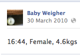

My Life As An Object
- 
A group of museums in the East Midlands asked us to inspire them with some ideas for how they could engage online audiences with the objects in their collections. Our response was to take a selection of objects and to imagine how they would behave if they had a life online.
My Life As An Object was the result - a month-long project where each week a different object would come to life on a different social media platform. The project was highly exploratory in nature, examining different narrative styles and different types of audience participation.
The objects included a yellow Raleigh Chopper, which relived the story of its life on Twitter, and a Paul Sandby painting, which invited people to speculate on its story via postcards and on Flickr. A baby weighing scales reported the weights of a week's worth of newborn babies (taken from a local hospital) live on Facebook, and an antique jewellery box set up an account on eBay in order to auction off some of its contents.
The project and the objects attracted lots of interest and interaction, and the client was delighted with the new forms of expression that arose.